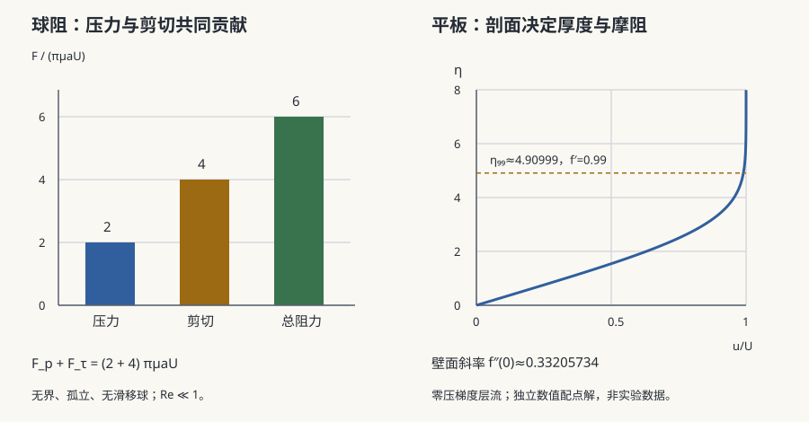

流体 II · 粘性、边界层与阻力
对标：Batchelor ch.4–5 / Schlichting《边界层理论》/ Purcell "Life at Low Reynolds Number" ｜ 前置：fl-01 粘性的作用极不均匀：在大部分区域可以忽略，却在紧贴壁面的薄层里完全主导——而正是这一层决定了阻力、升力与失速。Prandtl 1904 年的这个洞见，把流体力学从"漂亮但没用"变成了工程学科。

1. 低雷诺数：Stokes 流的怪异世界
\(\mathrm{Re}\ll1\) 时丢掉惯性项，N–S 退化为线性的 Stokes 方程：
Stokes 阻力【推导】：球体 \(F = 6\pi\mu a U\)。
两个反直觉后果：
① 时间可逆性。 方程无时间导数、无非线性 → 把驱动反向，流体精确回到原处（著名的甘油演示实验）。
② 扇贝定理（Purcell）：低 \(\mathrm{Re}\) 下，任何往复对称的形变都不产生净位移——一开一合的扇贝原地不动。所以细菌必须用非往复的方式游动：螺旋鞭毛的旋转、或纤毛的非对称拍打。这是一条纯粹由方程对称性推出的生物学约束（🔗 bio 站的鞭毛马达）。
2. 高雷诺数：边界层
\(\mathrm{Re}\gg1\) 时，粘性项系数很小，但不能直接丢弃——因为壁面要求无滑移 \(\mathbf u=0\)，而 Euler 方程只能满足法向条件。矛盾在壁面附近厚度为 \(\delta\) 的薄层中化解。
量级平衡【标度推导】：层内粘性与惯性同量级 \(\dfrac{\mu U}{\delta^2}\sim\dfrac{\rho U^2}{L}\) 给
Blasius 解【引用】：平板层流边界层的相似解，\(\delta\approx5.0\,x/\sqrt{\mathrm{Re}_x}\)，壁面切应力 \(\tau_w\propto x^{-1/2}\)。
这就是 d'Alembert 佯谬的解答（fl-01）：无论 \(\mu\) 多小，边界层始终存在，且它的存在改变了整个外流。
3. 分离：升力消失的地方
逆压梯度（\(dp/dx>0\)，如翼型后半段）会减速近壁流体，一旦壁面切应力变号，边界层脱离壁面——流动分离。
后果：
- 尾流增大 → 压差阻力（形阻）急剧上升；
- 机翼失速：攻角过大 → 分离 → 升力骤降；
- 分离点位置决定一切，而它对边界层状态极敏感。
阻力危机【经典现象】：\(\mathrm{Re}\sim3\times10^5\) 时，边界层由层流转捩为湍流。湍流边界层动量输运强、更"抗压"，分离点后移 → 尾流变窄 → 阻力系数骤降约 3–4 倍（图 fl-02.1 的陡坎）。
这解释了高尔夫球的酒窝：粗糙表面提前触发转捩，把阻力危机拉到更低的 \(\mathrm{Re}\)，使球飞得更远。"人为制造湍流以减小阻力"——一个彻底反直觉、却每天被验证的工程事实。
4. 阻力的分解与升力
流线型物体以摩擦阻力为主（分离被推迟），钝体以压差阻力为主。
升力：由绕翼型的环量 \(\Gamma\) 给出 Kutta–Joukowski 定理 \(L = \rho U\Gamma\)。环量并非凭空产生——Kelvin 定理（fl-01）要求总环量守恒，起动时脱落的"起动涡"携带等量反向环量。升力的产生与一个被留在身后的涡严格配对。
5. 练习与要点
例 1（细菌与人的世界之别） 人游泳 \(\mathrm{Re}\sim10^6\)：停止划水仍滑行数米（惯性）。细菌 \(\mathrm{Re}\sim10^{-5}\)：停止转动鞭毛后滑行距离约为原子尺度——惯性完全不存在，"游泳"等价于"在极稠的糖浆中拧螺丝"。
例 2（边界层有多薄） 机翼弦长 1 m、\(\mathrm{Re}=10^7\)：\(\delta\sim L/\sqrt{\mathrm{Re}}\sim0.3\) mm。整架飞机的阻力，取决于不到半毫米厚的一层流体。
例 3（阻力危机的量级） 光滑球 \(C_D\) 从 0.5 降到 0.1 附近——同样速度下阻力降至约 1/5。高尔夫球正是靠它把飞行距离提高约一倍。\(\blacksquare\)
下一页：\(\mathrm{Re}\) 继续升高会怎样？流动失去规则性，进入物理学最著名的未解难题——湍流。这里我们只能得到标度律，得不到解。